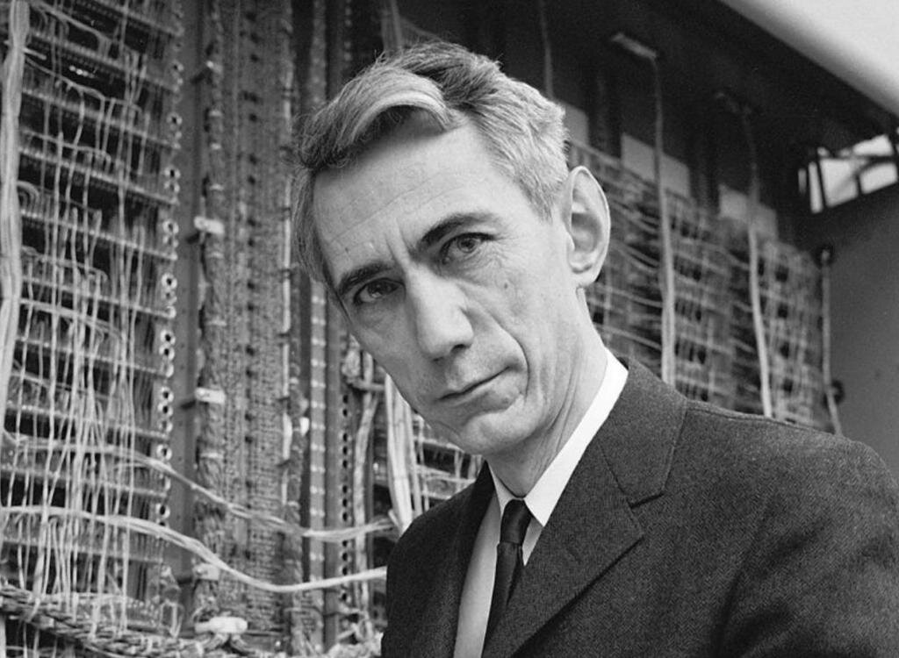
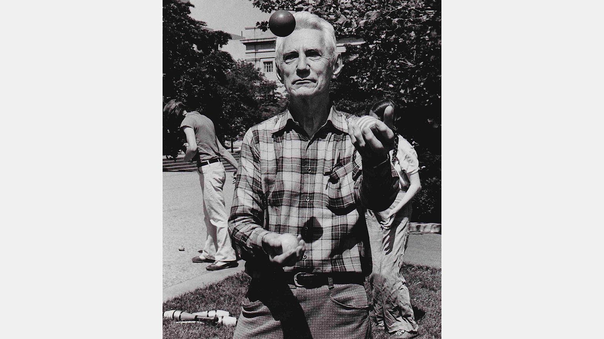

Интересные факты
Придумал "бит" и положил начало всей цифровой эпохе
- До Шеннона не было единого способа измерять информацию. В своей революционной работе 1948 года «Математическая теория связи» он ввёл понятие бита (от binary digit) как минимальной единицы информации. Это фундамент, на котором построены все современные компьютеры, интернет и цифровые коммуникации. Фактически, он создал теорию информации как науку.
Магистерская диссертация — одна из самых важных в истории
- В 21 год, будучи аспирантом в MIT, Шеннон написал работу, в которой доказал, что электрические цепи можно использовать для решения логических задач. Он связал булеву алгебру (где значения Истина/Ложь) с работой электрических переключателей (Вкл/Выкл). Эта простая, но гениальная идея — краеугольный камень всей цифровой схемотехники. Без неё не было бы процессоров.

Был жонглёром и изобретателем эксцентричных устройств
- Шеннон обожал жонглирование и даже построил несколько жонглирующих машин. Его страстью было создание необычных механизмов, которые он называл "игрушками"
Взламывал нацистские коды во время Второй мировой войны
- Шеннон работал в подразделении, занимавшемся криптоанализом. Он сотрудничал с самим Аланом Тьюрингом. Встреча двух гениев была засекречена, но именно работа над шифрами помогла Шеннону сформулировать ключевые идеи для теории информации: он понял, что информация и entropy (мера неопределенности) — это одно и то же, и что любое сообщение можно передать без потерь, если преодолеть "шум".
Ездил на работе на уницикле
- Коллеги часто видели, как Шеннон рассекает по длинным коридорам на своём уницикле, иногда даже жонглируя. Однажды он сконструировал уницикл с эксцентричным колесом, на котором было почти невозможно ехать, просто для того, чтобы бросить себе вызов.
Первым предсказал победу компьютеров над людьми в шахматах
Ещё в 1949 году Шеннон написал статью «Программирование компьютера для игры в шахматы», где не только предложил первые алгоритмы для шахматных программ, но и предсказал, что однажды машина сможет победить чемпиона мира. Это произошло почти за 50 лет до знаменитого матча Deep Blue против Каспарова.